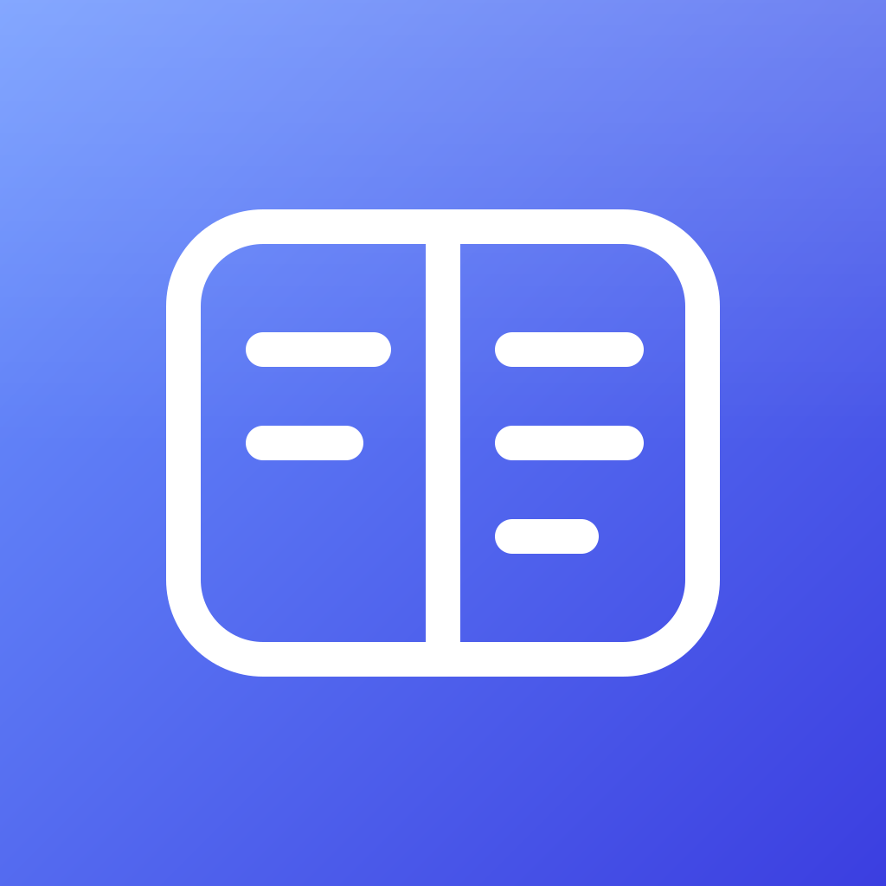

1 Monogramme
Le M et la flèche du logo Markdown, blanc sur bleu. Reconnaissable au premier coup d'œil.
Télécharger le PNGCinq pistes dans le même esprit épuré. Chaque icône est montrée en grande taille, puis à la taille d'une icône d'iPhone, de bureau et d'onglet.
Le M et la flèche du logo Markdown, blanc sur bleu. Reconnaissable au premier coup d'œil.
Télécharger le PNGUne page blanche au coin plié avec un # bleu, le symbole des titres. Fond nuit, dans l'esprit du thème sombre.
Télécharger le PNGTrois barres de longueur décroissante : la hiérarchie H1, H2, H3. Fond clair, très épuré.
Télécharger le PNG
Une fenêtre éditeur et aperçu, comme l'écran de l'application. Blanc sur indigo.
Télécharger le PNGUn M géométrique suivi d'un curseur de saisie bleu (le tiret bas d'un éditeur). Fond graphite, sobre et contrasté.
Télécharger le PNG